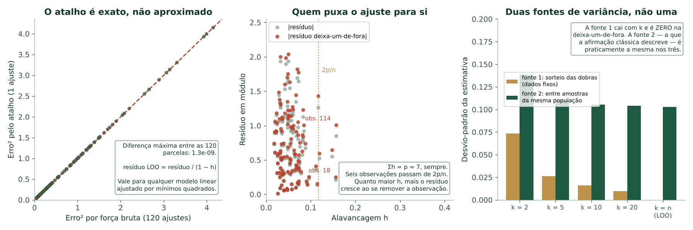
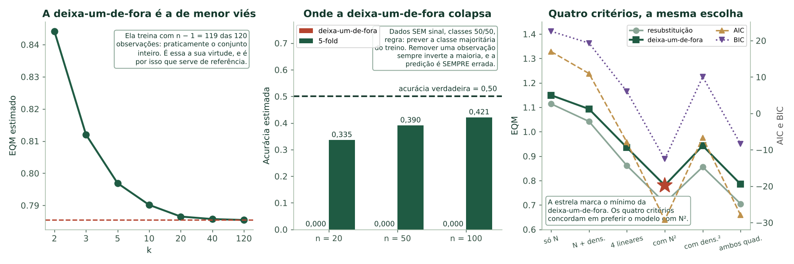

Leave-one-out cross-validation (LOOCV)
Valida o modelo omitindo uma observação por vez; para modelos lineares, o atalho da alavancagem a torna gratuita.
Comece por aqui
A deixa-um-de-fora é a validação cruzada levada ao extremo: \(k=n\). Cada observação é predita por um modelo ajustado com todas as outras. Por treinar com \(n-1\) das \(n\) observações, é a de menor viés da família — e, para modelos lineares, há um atalho que a torna praticamente gratuita.
Para qualquer modelo linear ajustado por mínimos quadrados, o resíduo deixa-um-de-fora da observação \(i\) é simplesmente \(r_i/(1-h_i)\), com \(r_i\) o resíduo comum e \(h_i\) a alavancagem. Não é aproximação: é identidade algébrica. Nos dados desta ficha, a maior discrepância entre as 120 parcelas calculadas pelos dois caminhos é de 1,3 × 10⁻⁹.
O que é a deixa-um-de-fora
O procedimento é literal: omita a observação 1, ajuste o modelo com as outras 119, prediga a observação 1 e guarde o erro; repita para as 120. A média dos erros quadráticos é a estimativa. Como não há sorteio, o resultado é determinístico — a mesma análise, no mesmo conjunto, devolve sempre o mesmo número.

\(\text{PRESS}=\sum_i\left[r_i/(1-h_i)\right]^2\) é a predicted residual error sum of squares, proposta por Allen (1974). A estimativa da deixa-um-de-fora é simplesmente PRESS/n, e o \(R^2\) de predição, \(1-\text{PRESS}/\text{SQT}\), é uma medida de validação que custa um único ajuste.
Pressupostos e como verificá-los
| Pressuposto | Por que importa | Como verificar |
|---|---|---|
| Observações independentes | Omitir uma só faz sentido se ela for a unidade. | Com dados agrupados, omita o GRUPO, não a observação. |
| Todo o pré-processamento dentro do laço | Igual à validação cruzada k-fold. | Com o atalho, isso é automático só para o ajuste linear. |
| O atalho vale só para modelos lineares | Ele vem da álgebra da matriz chapéu. | Para GLM há aproximações; para outros modelos, força bruta. |
| Modelo estável à remoção de uma observação | Modelos instáveis tornam a estimativa errática. | Compare com k = 5 e k = 10. |
| Ausência de observações muito influentes | Um h próximo de 1 explode o resíduo deixa-um-de-fora. | Examine h; alerte-se acima de 2p/n. |
| Custo computacional aceitável | Sem atalho, são n ajustes. | Com n grande e modelo caro, prefira k = 10. |
| Classes equilibradas em classificação | Com classes 50/50, pode colapsar. | Veja o exemplo construído desta ficha. |
Considere dados sem nenhum sinal, com duas classes em proporção exatamente 50/50, e a regra "classificar tudo na classe majoritária do treino". Com \(n\) par, remover uma observação sempre deixa a outra classe em maioria — e a predição é sempre errada. A deixa-um-de-fora estima acurácia 0,0000 para um classificador cuja acurácia verdadeira é 50%. O 5-fold estima 0,34 a 0,42, também abaixo, mas sem colapsar. O exemplo é construído, mas o mecanismo é real: os \(n\) conjuntos de treino são quase idênticos, e qualquer dependência do modelo em relação ao conjunto inteiro se propaga às \(n\) predições de uma vez.
Formulação e cálculo
O atalho, e por que ele funciona
Em que:
- \(\hat f^{-i}\)
- modelo ajustado sem a observação \(i\)
- \(r_i\)
- resíduo comum, \(y_i-\hat f(x_i)\)
- \(h_{ii}\)
- alavancagem: elemento \(i\) da diagonal de \(H\)
- \(H\)
- matriz chapéu, ou matriz de projeção
- \(\text{PRESS}\)
- soma de quadrados dos resíduos deixa-um-de-fora
A identidade decorre de uma atualização de posto 1 da inversa de \(X^{\top}X\): remover uma linha de \(X\) altera o ajuste de forma que pode ser calculada em forma fechada. O custo é o de um único ajuste mais a diagonal de \(H\).
Exemplo numérico, passo a passo
| Caminho | EQM | Tempo |
|---|---|---|
| Força bruta (120 ajustes) | 0,785447 | 2,7 ms |
| Atalho (1 ajuste) | 0,785447 | 0,1 ms |
| Diferença máxima entre as 120 parcelas | 1,33 × 10⁻⁹ | — |
| Quantidade | Valor |
|---|---|
| Soma das alavancagens | 7,0000 = p (é sempre assim) |
| Alavancagem média | p/n = 0,0583 |
| Menor / maior | 0,0183 / 0,3805 |
| Observações com h > 2p/n | 6 de 120 |
| Obs. | N | Densidade | M.O. | Chuva | h | Resíduo | Resíduo LOO |
|---|---|---|---|---|---|---|---|
| 26 | 80 | 39,1 | 1,73 | 589 | 0,3805 | 0,0297 | 0,0479 |
| 114 | 200 | 77,6 | 3,55 | 497 | 0,1574 | 0,8478 | 1,0061 |
| 18 | 200 | 45,0 | 3,70 | 621 | 0,1563 | 0,2100 | 0,2489 |
| 58 | 200 | 44,6 | 2,65 | 532 | 0,1482 | −0,5484 | −0,6438 |
| 2 | 200 | 65,2 | 3,67 | 736 | 0,1197 | −0,5227 | −0,5938 |
A observação 26 tem alavancagem de 0,38 — seis vezes a média — porque combina a menor densidade do conjunto (39,1 mil plantas/ha) com matéria orgânica baixa. O resíduo dela é minúsculo, 0,03, justamente porque o ajuste foi puxado até ela; removida, o resíduo cresce 61%.
A observação 114 ilustra o outro padrão: alavancagem moderada e resíduo grande. É a combinação dos dois — h alto e resíduo alto — que caracteriza uma observação influente, e é isso que a distância de Cook mede.
Propriedades
- É o caso \(k=n\) da validação cruzada, e o de menor viés da família.
- É determinística: não há sorteio de dobras, logo a estimativa é sempre a mesma.
- Para modelos lineares, custa um único ajuste pelo atalho da alavancagem.
- A soma \(\sum_i h_{ii}\) é sempre igual a \(p\), o número de parâmetros.
- Para modelos lineares, é assintoticamente equivalente ao AIC (Stone, 1977).
- \(R^2_{\text{predição}}=1-\text{PRESS}/\text{SQT}\) é a versão validada do \(R^2\), e pode ser negativa.
- Os \(n\) erros são fortemente correlacionados entre si, porque os conjuntos de treino diferem em uma só observação.
Como interpretar os resultados
| Elemento | O que informa | Cuidado |
|---|---|---|
| EQM deixa-um-de-fora | A estimativa de menor viés. | Com modelos instáveis, pode ser errática. |
| PRESS | A soma dos erros deixa-um-de-fora. | É n vezes o EQM. |
| R² de predição | Versão validada do R². | Pode ser negativa. |
| hatvalues | A alavancagem de cada observação. | Soma = p; alerta acima de 2p/n. |
| Resíduo LOO grande | Observação mal predita quando omitida. | Combine com h para identificar influência. |
delta de cv.glm | Estimativa bruta e corrigida. | A segunda corrige o viés de k < n. |
A afirmação clássica, examinada
A afirmação é correta, mas refere-se a uma fonte específica de variância, e vale separar as duas. Fonte 1, o sorteio das dobras com os dados fixos: aqui a deixa-um-de-fora é a de menor variância — exatamente zero, porque não há nada a sortear. Fonte 2, a variabilidade entre amostras diferentes da mesma população: é a essa que a afirmação se refere. Nos dados desta ficha, a simulação com 2 000 conjuntos gerados do mesmo processo dá desvios-padrão de 0,1108 (k = 5), 0,1062 (k = 10) e 0,1036 (deixa-um-de-fora) — praticamente iguais, e a deixa-um-de-fora sequer é a pior. A razão é que o modelo é linear e estável. Com modelos instáveis — árvores, vizinhos mais próximos, seleção de variáveis — a correlação entre os \(n\) erros é forte e a variância cresce de fato.
Como executar no R e em Python
Onde executar o código em Python
Não é preciso instalar nada: o Google Colab é um computador na nuvem, gratuito, que executa Python pelo navegador e já traz as bibliotecas usadas aqui (numpy, scipy e matplotlib).
O atalho sai do R base: hatvalues(m) dá a diagonal da matriz chapéu e residuals(m) os resíduos, de modo que mean((residuals(m)/(1 - hatvalues(m)))^2) é a estimativa completa a partir de um único ajuste. Para GLM, boot::cv.glm(dados, modelo) usa \(K=n\) por padrão e aplica uma aproximação quando o modelo não é linear. caret::train() com trainControl(method = "LOOCV") funciona para qualquer modelo, por força bruta.
m <- lm(f_completo, data = milho)
mean((residuals(m)/(1 - hatvalues(m)))^2) # a estimativa completa
sum((residuals(m)/(1 - hatvalues(m)))^2) # a estatística PRESS
Exemplo de aplicação
Contexto dos dados
Os dados são fictícios e foram criados pelo autor: 120 talhões de milho, com a produtividade em t/ha e quatro variáveis explicativas — dose de nitrogênio (kg/ha), densidade de plantio (mil plantas/ha), matéria orgânica do solo (%) e precipitação no ciclo (mm). O processo gerador tem resposta quadrática ao nitrogênio e à densidade, e um erro de desvio-padrão 0,85 t/ha. O mesmo conjunto atravessa as fichas de avaliação de modelos, de modo que as estimativas de erro produzidas por cada método podem ser comparadas diretamente.
Código em R
# Deixa-um-de-fora (LOOCV): exemplo completo ----
# Pacotes: boot (cv.glm), caret; o atalho sai do R base
# Dados fictícios: 120 talhões de milho. Produtividade (t/ha) em função da
# dose de nitrogênio, densidade de plantio, matéria orgânica e precipitação.
# O arquivo scripts/milho.csv acompanha o repositório.
milho <- read.csv("milho.csv")
str(milho); summary(milho$y)
colMeans(milho)
# O modelo usado em todas as fichas deste grupo
f_completo <- y ~ N + I(N^2) + densidade + I(densidade^2) + mo + chuva
eqm <- function(obs, prev) mean((obs - prev)^2)
n <- nrow(milho)
# ---- Força bruta: n ajustes
e_bruta <- numeric(n)
for (i in 1:n) {
mm <- lm(f_completo, data = milho[-i, ])
e_bruta[i] <- (milho$y[i] - predict(mm, newdata = milho[i, ]))^2
}
mean(e_bruta)
# ---- O ATALHO: um ajuste só, pela alavancagem
m <- lm(f_completo, data = milho)
h <- hatvalues(m) # diagonal da matriz chapéu
r <- residuals(m)
e_atalho <- (r/(1 - h))^2
mean(e_atalho)
max(abs(e_bruta - e_atalho)) # praticamente zero: é identidade
# A soma das residuais deixa-um-de-fora é a estatística PRESS
PRESS <- sum(e_atalho)*1; PRESS
sum(h) # é sempre p
mean(h) # p/n
sum(h > 2*length(coef(m))/n) # observações de alta alavancagem
# As cinco de maior alavancagem
o <- order(h, decreasing = TRUE)[1:5]
data.frame(obs = o, h = round(h[o], 4), residuo = round(r[o], 4),
res_loo = round(r[o]/(1 - h[o]), 4))
# ---- Com o pacote boot
library(boot)
g <- glm(f_completo, data = milho)
cv.glm(milho, g)$delta # K = n por padrão
cv.glm(milho, g, K = 10)$delta
# ---- Com o caret
library(caret)
train(f_completo, data = milho, method = "lm",
trControl = trainControl(method = "LOOCV"))
# ---- Comparação com os demais k
for (k in c(2, 3, 5, 10, 20, 40, n)) {
v <- if (k == n) mean(e_atalho) else mean(replicate(200, {
d <- sample(rep(1:k, length.out = n)); e <- numeric(n)
for (j in 1:k) {
mm <- lm(f_completo, data = milho[d != j, ])
e[d == j] <- (milho$y[d == j] - predict(mm, newdata = milho[d == j, ]))^2
}
mean(e) }))
cat(sprintf("k = %3d: EQM %.4f\n", k, v))
}
# ---- Seleção de modelo: LOOCV, AIC e BIC
cands <- list("so N" = y ~ N,
"N+dens" = y ~ N + densidade,
"4 lineares" = y ~ N + densidade + mo + chuva,
"com N2" = y ~ N + I(N^2) + densidade + mo + chuva,
"com dens2" = y ~ N + densidade + I(densidade^2) + mo + chuva,
"ambos" = f_completo)
t(sapply(cands, function(f) {
mm <- lm(f, data = milho); hh <- hatvalues(mm); rr <- residuals(mm)
c(resub = mean(rr^2), loocv = mean((rr/(1 - hh))^2),
AIC = AIC(mm), BIC = BIC(mm)) }))
# Para modelos lineares, LOOCV e AIC são assintoticamente equivalentes
# (Stone, 1977), e aqui escolhem o mesmo modelo.
# ---- Quando a deixa-um-de-fora FALHA (exemplo construído)
# Classificador que prevê a classe majoritária do treino, em dados
# sem sinal e com classes 50/50: a deixa-um-de-fora estima acurácia ZERO.
set.seed(9)
nn <- 50; yy <- sample(rep(0:1, each = nn/2))
err <- sum(sapply(1:nn, function(i)
(as.numeric(mean(yy[-i]) > 0.5) != yy[i])))
1 - err/nn # acurácia estimada pela deixa-um-de-fora
A mesma análise em Python, com os resultados
Cole o código em um notebook do Google Colab ↗ e execute com Shift+Enter. Os valores abaixo são a saída desse código.
# Bibliotecas: numpy e scipy (ambas já instaladas no Google Colab)
import numpy as np
from scipy import stats
# ===================================================================
# Dados fictícios, criados pelo autor, compartilhados pelas fichas de
# avaliação de modelos: 120 talhões de milho, com a produtividade (t/ha)
# e quatro variáveis: dose de nitrogênio (kg/ha), densidade de plantio
# (mil plantas/ha), matéria orgânica do solo (%) e precipitação no ciclo (mm).
# Colunas: y, N, densidade, materia_organica, chuva
# ===================================================================
MILHO = np.array([
[7.65,40,56.3,1.86,572], [9.35,200,65.2,3.67,736], [6.8,160,71.1,2.46,372], [7.52,80,62.6,3.54,340],
[6.39,0,64,3.17,528], [8.54,160,58.2,2.81,433], [9.29,80,60.3,3.48,530], [6.85,120,59.8,2.58,375],
[8.76,120,60,3.54,532], [8,40,57.8,1.87,638], [5.86,80,64.8,2.27,620], [9.23,200,71.1,3.65,421],
[7.37,160,55.4,1.32,492], [8.55,200,71.8,3.13,600], [5.73,0,59.2,2.51,684], [6.3,80,59.4,2.41,434],
[5.66,0,46.9,2.31,443], [10.2,200,45,3.7,621], [8.84,120,67.1,1.72,488], [7.22,40,54.4,3.38,428],
[8.62,160,67.6,3.13,615], [8.97,160,62.4,2.5,369], [5.58,40,63.8,2.74,458], [8.52,160,71.3,3.29,607],
[6.97,0,61.5,2.38,463], [7.8,80,39.1,1.73,589], [8.8,120,49.8,3,410], [6.51,0,68.8,2.21,590],
[8.1,160,76,2.51,562], [10.13,200,61.3,2.84,666], [8.7,160,57.1,3.32,498], [9.12,120,52.3,4.07,488],
[9.21,200,65.8,3.04,511], [9.56,80,49.4,2.88,614], [7.59,80,53.3,3.37,453], [9,80,63,3,507],
[7.84,80,62.7,1.62,695], [7.23,120,60.2,2.38,590], [5.79,80,69.4,1.93,585], [7.6,80,53.3,3.29,473],
[10.46,120,53.7,3.69,597], [8.81,120,59.1,3.05,415], [6.29,0,62.5,2.08,386], [8.3,80,59.6,3.36,435],
[8.54,80,75.9,2.13,648], [6.05,0,57.8,2.98,535], [3.93,0,66.4,1.96,436], [6.95,40,57.9,1.83,488],
[5.84,40,64.2,1.82,561], [8.31,200,58.9,2.81,626], [7.77,200,59.2,2.34,373], [8.83,160,73.4,3.11,640],
[7.99,80,59.6,1.89,604], [9.28,160,74,3.14,457], [9.28,160,56.8,2.37,484], [10.55,80,58.7,3.68,564],
[6.44,80,69.8,3.51,494], [8.6,200,44.6,2.65,532], [9.92,80,50.3,2.88,425], [8.44,200,62.1,2.97,356],
[7.78,80,65.3,3.12,739], [6.18,40,66,2.61,535], [8.88,200,59.7,3.57,540], [8.22,120,51.9,2.44,566],
[9.58,120,67.8,1.45,640], [8.23,200,65.1,2.97,604], [4.71,0,54,2.72,427], [10.63,160,62.6,3.38,510],
[6.94,40,74.7,3.22,526], [8.58,80,62.9,2.89,589], [8.7,200,53.6,2.88,466], [9.05,80,59,2.89,554],
[5.96,40,59.4,2.34,540], [9.37,120,64.4,1.95,644], [7.89,160,68.4,2.23,285], [9,200,55.3,2.74,527],
[4.34,0,57.4,1.21,551], [9.67,160,69.2,2.49,581], [8.81,160,67.2,2.11,519], [7.04,80,71.6,2.74,445],
[6.92,40,51.6,2.23,580], [7.32,80,55.2,2.84,553], [7.51,40,69.1,2.64,444], [7.03,0,55.2,3.71,397],
[7.94,40,64.3,2.56,570], [7.95,80,61.6,2.63,442], [9.43,120,56.7,2.82,578], [5.06,40,72.4,1.53,656],
[6.3,40,61.9,2.05,539], [6.17,0,58.4,3.81,541], [8.22,80,60.8,3.16,531], [6.58,0,63.7,2.86,645],
[7.46,40,50.8,3.56,646], [6.37,40,55.8,2.67,528], [6.78,0,52.9,2.63,587], [8.54,160,47,2.59,524],
[3.94,0,68.9,1.56,475], [5.5,40,72.2,3.46,589], [6.46,80,70.4,2.67,512], [8.17,120,49.4,2.73,444],
[8.73,200,64.8,2.57,385], [7.1,120,66.8,2.36,609], [5.78,40,57.9,1.22,433], [8.98,200,67.8,2.91,420],
[9.57,160,54,4.33,496], [8.76,80,54.3,3.49,587], [8.66,80,56,2.6,365], [8.29,160,56.8,2.15,577],
[4.35,0,54.8,2.82,555], [4.89,0,68.8,3.06,411], [4.53,0,54.4,2.72,417], [9.05,120,58.7,3.38,504],
[8.82,80,57.4,2.13,694], [9.44,200,77.6,3.55,497], [9.43,120,55.6,2.91,618], [6.77,0,65.3,2.42,605],
[8.24,200,74.9,2.6,377], [10.17,200,53.6,3.04,520], [7.96,40,56.1,3.33,609], [5.79,0,59.6,2.85,475]])
y = MILHO[:, 0]; Xv = MILHO[:, 1:]
nomes = ["nitrogênio", "densidade", "mat. orgânica", "chuva"]
n = len(y)
def monta(X, grau_n=1, grau_d=1):
"""Matriz de delineamento: intercepto, as quatro variáveis e termos
quadráticos opcionais para nitrogênio e densidade."""
cols = [np.ones(len(X))] + [X[:, j] for j in range(4)]
if grau_n >= 2: cols.append(X[:, 0]**2)
if grau_d >= 2: cols.append(X[:, 1]**2)
return np.column_stack(cols)
def ajusta(Xd, yy):
return np.linalg.lstsq(Xd, yy, rcond=None)[0]
def eqm(obs, prev):
return float(np.mean((obs - prev)**2))
def cv_k(Xd, yy, k, semente=0):
nn = len(yy); rng = np.random.default_rng(semente)
dob = np.array_split(rng.permutation(nn), k); e = np.empty(nn)
for d in dob:
m = np.ones(nn, bool); m[d] = False
b = ajusta(Xd[m], yy[m]); e[d] = (yy[d] - Xd[d] @ b)**2
return e.mean()
def loocv_forca_bruta(Xd, yy):
"""n ajustes, um por observação omitida."""
nn = len(yy); e = np.empty(nn)
for i in range(nn):
m = np.ones(nn, bool); m[i] = False
b = ajusta(Xd[m], yy[m]); e[i] = (yy[i] - Xd[i] @ b)**2
return e
def loocv_atalho(Xd, yy):
"""UM ajuste só, usando os valores de alavancagem (PRESS)."""
b = ajusta(Xd, yy); r = yy - Xd @ b
H = Xd @ np.linalg.pinv(Xd.T @ Xd) @ Xd.T
h = np.diag(H)
return (r/(1 - h))**2, h
# ===================================================================
# PARTE 1 - a deixa-um-de-fora, e o atalho que a torna gratuita
# ===================================================================
print(f"{n} talhões de milho. Modelo com as quatro variáveis e os dois")
print("termos quadráticos (p = 7 parâmetros).")
Xd = monta(Xv, 2, 2)
import time
t0 = time.time()
for _ in range(20): e_bruta = loocv_forca_bruta(Xd, y)
t_b = (time.time() - t0)/20
t0 = time.time()
for _ in range(20): e_atalho, h = loocv_atalho(Xd, y)
t_a = (time.time() - t0)/20
print(f"\nA deixa-um-de-fora é a validação cruzada com k = n: são {n} ajustes,")
print("cada um omitindo uma observação.")
print(f"\n EQM por força bruta ({n} ajustes): {e_bruta.mean():.6f} "
f"({t_b*1000:.1f} ms)")
print(f" EQM pelo atalho (1 ajuste só): {e_atalho.mean():.6f} "
f"({t_a*1000:.1f} ms)")
print(f" diferença máxima entre as {n} parcelas: "
f"{np.abs(e_bruta-e_atalho).max():.2e}")
print(f" o atalho é cerca de {t_b/t_a:.0f} vezes mais rápido, e exato")
print(" (tempos médios de 20 execuções; a vantagem cresce com n, porque a")
print(" força bruta faz n ajustes e o atalho sempre faz um)")
print("\nO atalho vale para QUALQUER modelo linear ajustado por mínimos")
print("quadrados, e é uma identidade algébrica, não uma aproximação:")
print(" resíduo deixa-um-de-fora = resíduo comum / (1 − h_i)")
print("em que h_i é a alavancagem da observação i, o i-ésimo elemento da")
print("diagonal da matriz chapéu H = X(X'X)⁻¹X'.")
print(f"\n soma das alavancagens = {h.sum():.4f} = p = {Xd.shape[1]} "
"(é sempre assim)")
print(f" alavancagem média = p/n = {h.mean():.4f}")
print(f" menor {h.min():.4f} | maior {h.max():.4f} "
f"| observações com h > 2p/n: {int(np.sum(h > 2*Xd.shape[1]/n))}")
print("\nAs cinco observações de maior alavancagem")
o = np.argsort(h)[::-1][:5]
print(f"{'obs.':>6}{'N':>7}{'densid.':>10}{'M.O.':>8}{'chuva':>8}"
f"{'h':>9}{'resíduo':>10}{'res. LOO':>10}")
b = ajusta(Xd, y); r = y - Xd @ b
for i in o:
print(f"{i+1:>6}{Xv[i,0]:>7.0f}{Xv[i,1]:>10.1f}{Xv[i,2]:>8.2f}"
f"{Xv[i,3]:>8.0f}{h[i]:>9.4f}{r[i]:>10.4f}{r[i]/(1-h[i]):>10.4f}")
print("Quanto maior a alavancagem, mais o resíduo cresce ao se remover a")
print("observação: ela puxava o ajuste para si.")
# ===================================================================
# PARTE 2 - comparação com os demais k
# ===================================================================
print("\n" + "=" * 70)
print("A deixa-um-de-fora no contexto dos demais valores de k")
print(f"\n{'k':>6}{'n de treino':>14}{'EQM':>11}{'ajustes':>10}{'viés*':>10}")
loo = e_atalho.mean()
for k in [2, 3, 5, 10, 20, 40, n]:
vals = [cv_k(Xd, y, k, semente=s) for s in range(200)] if k < n else [loo]
print(f"{k:>6}{n - n//k:>14}{np.mean(vals):>11.4f}"
f"{k:>10}{np.mean(vals)-loo:>10.4f}")
print(f"* diferença em relação à deixa-um-de-fora, tomada como referência")
print("\nA deixa-um-de-fora é a de MENOR VIÉS, porque treina com n − 1")
print("observações - praticamente o conjunto inteiro. É essa a sua virtude,")
print("e é a razão de ela ser a referência natural.")
# ===================================================================
# PARTE 3 - a variância: a afirmação clássica, posta à prova
# ===================================================================
print("\n" + "=" * 70)
print("'A deixa-um-de-fora tem variância alta.' A afirmação é correta, mas")
print("refere-se a uma fonte de variância específica, e vale separar as duas.")
print("\nFONTE 1 - o sorteio das dobras, com os DADOS FIXOS.")
print(f"{'k':>6}{'DP entre 500 sorteios':>26}")
for k in [2, 5, 10, 20, n]:
if k == n:
print(f"{k:>6}{0.0:>26.4f} (não há sorteio)")
else:
v = [cv_k(Xd, y, k, semente=s) for s in range(500)]
print(f"{k:>6}{np.std(v, ddof=1):>26.4f}")
print("Nessa fonte, a deixa-um-de-fora é a de MENOR variância: zero, porque")
print("não há nada a sortear. Não é a essa variância que a afirmação se refere.")
print("\nFONTE 2 - a variabilidade entre AMOSTRAS diferentes da mesma")
print("população. É esta que importa, e é esta que a afirmação descreve.")
print("Simulação: 2.000 conjuntos de 120 talhões gerados do mesmo processo")
print("(o mesmo que originou os dados desta ficha), e em cada um calculam-se")
print("as estimativas por k = 5, k = 10 e deixa-um-de-fora.")
def gera(rng, nn=120):
N_ = rng.choice([0,40,80,120,160,200], nn)
de = np.round(rng.normal(62,7,nn),1)
mo = np.round(np.clip(rng.normal(2.8,0.7,nn),1.0,None),2)
ch = np.round(rng.normal(520,90,nn),0)
mu = (3.2 + 0.0385*N_ - 0.000105*N_**2 + 0.055*(de-45)
- 0.0022*(de-45)**2 + 0.62*mo + 0.0032*(ch-400))
return np.column_stack([N_, de, mo, ch]), mu + rng.normal(0, 0.85, nn)
rng = np.random.default_rng(77)
col = {5: [], 10: [], "loo": []}
for _ in range(2000):
Xs, ys = gera(rng); Xds = monta(Xs, 2, 2)
col[5].append(cv_k(Xds, ys, 5, semente=1))
col[10].append(cv_k(Xds, ys, 10, semente=1))
col["loo"].append(loocv_atalho(Xds, ys)[0].mean())
print(f"\n{'método':>22}{'média':>11}{'DP entre amostras':>22}{'CV':>9}")
for rot, v in [("k = 5", col[5]), ("k = 10", col[10]),
("deixa-um-de-fora", col["loo"])]:
v = np.array(v)
print(f"{rot:>22}{v.mean():>11.4f}{v.std(ddof=1):>22.4f}"
f"{100*v.std(ddof=1)/v.mean():>8.1f}%")
print(f"\n(o valor verdadeiro do erro irredutível é σ² = {0.85**2:.4f})")
print("\nAqui a diferença de variância entre os três é pequena, e a")
print("deixa-um-de-fora sequer é a pior. O resultado contraria a versão")
print("simplificada da afirmação clássica, e a razão é que o modelo é LINEAR e")
print("ESTÁVEL: remover uma observação de 120 quase não muda o ajuste, de modo")
print("que os n erros deixa-um-de-fora não ficam tão correlacionados quanto o")
print("argumento supõe. Com modelos instáveis - árvores, vizinhos mais")
print("próximos, seleção de variáveis - a correlação é forte e a variância da")
print("deixa-um-de-fora cresce de fato.")
# ===================================================================
# PARTE 4 - onde a deixa-um-de-fora FALHA mesmo
# ===================================================================
print("\n" + "=" * 70)
print("O caso em que a deixa-um-de-fora falha de forma espetacular:")
print("um classificador treinado em dados SEM NENHUM SINAL, com as duas")
print("classes em proporções iguais.")
print("\nRegra: classificar tudo na classe MAJORITÁRIA do treino.")
print("Com n par e classes 50/50, remover uma observação SEMPRE deixa a outra")
print("classe em maioria no treino - e a predição é SEMPRE errada.")
rng = np.random.default_rng(9)
for nn in [20, 50, 100]:
acl, ak5 = [], []
for _ in range(2000):
yy = np.r_[np.ones(nn//2), np.zeros(nn//2)]
yy = rng.permutation(yy)
# deixa-um-de-fora
err = 0
for i in range(nn):
m = np.ones(nn, bool); m[i] = False
maj = 1.0 if yy[m].mean() > 0.5 else 0.0
err += (maj != yy[i])
acl.append(1 - err/nn)
# 5-fold
dob = np.array_split(rng.permutation(nn), 5); e5 = 0
for d in dob:
m = np.ones(nn, bool); m[d] = False
maj = 1.0 if yy[m].mean() > 0.5 else 0.0
e5 += np.sum(maj != yy[d])
ak5.append(1 - e5/nn)
print(f" n = {nn:>3}: acurácia estimada por deixa-um-de-fora = "
f"{np.mean(acl):.4f} | por 5-fold = {np.mean(ak5):.4f} "
f"| verdadeira = 0,5000")
print("\nA deixa-um-de-fora estima acurácia ZERO para um classificador cuja")
print("acurácia verdadeira é 50%. O 5-fold também subestima - 0,34 a 0,42,")
print("conforme n - mas não colapsa, e o seu viés diminui com n enquanto o da")
print("deixa-um-de-fora permanece total. É um exemplo construído,")
print("mas expõe o mecanismo: os n conjuntos de treino da deixa-um-de-fora são")
print("quase idênticos entre si, e qualquer dependência do modelo em relação")
print("ao conjunto inteiro se propaga a todas as n predições de uma vez.")
# ===================================================================
# PARTE 5 - a seleção de modelo pela deixa-um-de-fora
# ===================================================================
print("\n" + "=" * 70)
print("Seleção dos seis modelos candidatos, pela deixa-um-de-fora")
modelos = [("só nitrogênio", lambda X: np.column_stack([np.ones(len(X)), X[:,0]])),
("N + densidade", lambda X: np.column_stack([np.ones(len(X)), X[:,0], X[:,1]])),
("as quatro, linear", lambda X: monta(X, 1, 1)),
("com N²", lambda X: monta(X, 2, 1)),
("com densidade²", lambda X: monta(X, 1, 2)),
("com os dois quadráticos", lambda X: monta(X, 2, 2))]
print(f"\n{'modelo':<26}{'p':>4}{'resubst.':>11}{'LOOCV':>10}"
f"{'5-fold':>10}{'AIC':>11}{'BIC':>11}")
for rot, f in modelos:
Xm = f(Xv); p_ = Xm.shape[1]
bb = ajusta(Xm, y); sq = np.sum((y - Xm@bb)**2)
lo = loocv_atalho(Xm, y)[0].mean()
k5 = np.mean([cv_k(Xm, y, 5, semente=s) for s in range(200)])
aic = n*np.log(sq/n) + 2*p_
bic = n*np.log(sq/n) + np.log(n)*p_
print(f"{rot:<26}{p_:>4}{sq/n:>11.4f}{lo:>10.4f}{k5:>10.4f}"
f"{aic:>11.2f}{bic:>11.2f}")
print("\nOs quatro critérios concordam em preferir o modelo 'com N²'. A")
print("deixa-um-de-fora e o AIC são assintoticamente equivalentes para modelos")
print("lineares (Stone, 1977), o que explica a coincidência; o BIC penaliza")
print("mais a complexidade e, com n maior, poderia divergir deles.")
Resultados da execução
120 talhões de milho. Modelo com as quatro variáveis e os dois
termos quadráticos (p = 7 parâmetros).
A deixa-um-de-fora é a validação cruzada com k = n: são 120 ajustes,
cada um omitindo uma observação.
EQM por força bruta (120 ajustes): 0.785447 (2.7 ms)
EQM pelo atalho (1 ajuste só): 0.785447 (0.1 ms)
diferença máxima entre as 120 parcelas: 1.33e-09
o atalho é cerca de 32 vezes mais rápido, e exato
(tempos médios de 20 execuções; a vantagem cresce com n, porque a
força bruta faz n ajustes e o atalho sempre faz um)
O atalho vale para QUALQUER modelo linear ajustado por mínimos
quadrados, e é uma identidade algébrica, não uma aproximação:
resíduo deixa-um-de-fora = resíduo comum / (1 − h_i)
em que h_i é a alavancagem da observação i, o i-ésimo elemento da
diagonal da matriz chapéu H = X(X'X)⁻¹X'.
soma das alavancagens = 7.0000 = p = 7 (é sempre assim)
alavancagem média = p/n = 0.0583
menor 0.0183 | maior 0.3805 | observações com h > 2p/n: 6
As cinco observações de maior alavancagem
obs. N densid. M.O. chuva h resíduo res. LOO
26 80 39.1 1.73 589 0.3805 0.0297 0.0479
114 200 77.6 3.55 497 0.1574 0.8478 1.0061
18 200 45.0 3.70 621 0.1563 0.2100 0.2489
58 200 44.6 2.65 532 0.1482 -0.5484 -0.6438
2 200 65.2 3.67 736 0.1197 -0.5227 -0.5938
Quanto maior a alavancagem, mais o resíduo cresce ao se remover a
observação: ela puxava o ajuste para si.
======================================================================
A deixa-um-de-fora no contexto dos demais valores de k
k n de treino EQM ajustes viés*
2 60 0.8441 2 0.0587
3 80 0.8120 3 0.0266
5 96 0.7969 5 0.0115
10 108 0.7901 10 0.0047
20 114 0.7865 20 0.0011
40 117 0.7857 40 0.0003
120 119 0.7854 120 0.0000
* diferença em relação à deixa-um-de-fora, tomada como referência
A deixa-um-de-fora é a de MENOR VIÉS, porque treina com n − 1
observações - praticamente o conjunto inteiro. É essa a sua virtude,
e é a razão de ela ser a referência natural.
======================================================================
'A deixa-um-de-fora tem variância alta.' A afirmação é correta, mas
refere-se a uma fonte de variância específica, e vale separar as duas.
FONTE 1 - o sorteio das dobras, com os DADOS FIXOS.
k DP entre 500 sorteios
2 0.0726
5 0.0264
10 0.0162
20 0.0097
120 0.0000 (não há sorteio)
Nessa fonte, a deixa-um-de-fora é a de MENOR variância: zero, porque
não há nada a sortear. Não é a essa variância que a afirmação se refere.
FONTE 2 - a variabilidade entre AMOSTRAS diferentes da mesma
população. É esta que importa, e é esta que a afirmação descreve.
Simulação: 2.000 conjuntos de 120 talhões gerados do mesmo processo
(o mesmo que originou os dados desta ficha), e em cada um calculam-se
as estimativas por k = 5, k = 10 e deixa-um-de-fora.
método média DP entre amostras CV
k = 5 0.7868 0.1108 14.1%
k = 10 0.7795 0.1062 13.6%
deixa-um-de-fora 0.7735 0.1036 13.4%
(o valor verdadeiro do erro irredutível é σ² = 0.7225)
Aqui a diferença de variância entre os três é pequena, e a
deixa-um-de-fora sequer é a pior. O resultado contraria a versão
simplificada da afirmação clássica, e a razão é que o modelo é LINEAR e
ESTÁVEL: remover uma observação de 120 quase não muda o ajuste, de modo
que os n erros deixa-um-de-fora não ficam tão correlacionados quanto o
argumento supõe. Com modelos instáveis - árvores, vizinhos mais
próximos, seleção de variáveis - a correlação é forte e a variância da
deixa-um-de-fora cresce de fato.
======================================================================
O caso em que a deixa-um-de-fora falha de forma espetacular:
um classificador treinado em dados SEM NENHUM SINAL, com as duas
classes em proporções iguais.
Regra: classificar tudo na classe MAJORITÁRIA do treino.
Com n par e classes 50/50, remover uma observação SEMPRE deixa a outra
classe em maioria no treino - e a predição é SEMPRE errada.
n = 20: acurácia estimada por deixa-um-de-fora = 0.0000 | por 5-fold = 0.3359 | verdadeira = 0,5000
n = 50: acurácia estimada por deixa-um-de-fora = 0.0000 | por 5-fold = 0.3916 | verdadeira = 0,5000
n = 100: acurácia estimada por deixa-um-de-fora = 0.0000 | por 5-fold = 0.4218 | verdadeira = 0,5000
A deixa-um-de-fora estima acurácia ZERO para um classificador cuja
acurácia verdadeira é 50%. O 5-fold também subestima - 0,34 a 0,42,
conforme n - mas não colapsa, e o seu viés diminui com n enquanto o da
deixa-um-de-fora permanece total. É um exemplo construído,
mas expõe o mecanismo: os n conjuntos de treino da deixa-um-de-fora são
quase idênticos entre si, e qualquer dependência do modelo em relação
ao conjunto inteiro se propaga a todas as n predições de uma vez.
======================================================================
Seleção dos seis modelos candidatos, pela deixa-um-de-fora
modelo p resubst. LOOCV 5-fold AIC BIC
só nitrogênio 2 1.1143 1.1497 1.1521 16.99 22.56
N + densidade 3 1.0422 1.0932 1.0975 10.96 19.33
as quatro, linear 5 0.8614 0.9354 0.9434 -7.91 6.03
com N² 6 0.7089 0.7806 0.7900 -29.28 -12.56
com densidade² 6 0.8559 0.9428 0.9529 -6.67 10.06
com os dois quadráticos 7 0.7051 0.7854 0.7969 -27.93 -8.42
Os quatro critérios concordam em preferir o modelo 'com N²'. A
deixa-um-de-fora e o AIC são assintoticamente equivalentes para modelos
lineares (Stone, 1977), o que explica a coincidência; o BIC penaliza
mais a complexidade e, com n maior, poderia divergir deles.
| k | n de treino | EQM | Viés em relação à LOO |
|---|---|---|---|
| 2 | 60 | 0,8441 | +0,0587 |
| 3 | 80 | 0,8120 | +0,0266 |
| 5 | 96 | 0,7969 | +0,0115 |
| 10 | 108 | 0,7901 | +0,0047 |
| 20 | 114 | 0,7865 | +0,0011 |
| 40 | 117 | 0,7857 | +0,0003 |
| 120 | 119 | 0,7854 | — |
| k | Fonte 1: sorteio das dobras | Fonte 2: entre amostras |
|---|---|---|
| 2 | 0,0726 | — |
| 5 | 0,0264 | 0,1108 |
| 10 | 0,0162 | 0,1062 |
| 20 | 0,0097 | — |
| 120 (LOO) | 0,0000 | 0,1036 |
| n | Acurácia estimada pela LOO | Pelo 5-fold | Verdadeira |
|---|---|---|---|
| 20 | 0,0000 | 0,3359 | 0,5000 |
| 50 | 0,0000 | 0,3916 | 0,5000 |
| 100 | 0,0000 | 0,4218 | 0,5000 |
| Modelo | p | Resubstituição | LOOCV | 5-fold | AIC | BIC |
|---|---|---|---|---|---|---|
| Só nitrogênio | 2 | 1,1143 | 1,1497 | 1,1521 | 16,99 | 22,56 |
| N + densidade | 3 | 1,0422 | 1,0932 | 1,0975 | 10,96 | 19,33 |
| As quatro, lineares | 5 | 0,8614 | 0,9354 | 0,9434 | −7,91 | 6,03 |
| Com N² | 6 | 0,7089 | 0,7806 | 0,7900 | −29,28 | −12,56 |
| Com densidade² | 6 | 0,8559 | 0,9428 | 0,9529 | −6,67 | 10,06 |
| Com os dois quadráticos | 7 | 0,7051 | 0,7854 | 0,7969 | −27,93 | −8,42 |
Leitura: o atalho reproduz a força bruta até a nona casa decimal e é cerca de trinta vezes mais rápido nestes dados — vantagem que cresce com \(n\), porque a força bruta faz \(n\) ajustes e o atalho sempre faz um. Para modelos lineares, portanto, não há razão para não calcular a deixa-um-de-fora: ela vem de graça junto com o ajuste.
A tabela dos \(k\) mostra a virtude do método: ele é a referência de menor viés, e os demais valores de \(k\) convergem para ele à medida que crescem. A diferença entre \(k=10\) e a deixa-um-de-fora é de apenas 0,0047 — menos de 1% — o que explica por que \(k=10\) é a escolha prática usual quando o atalho não está disponível.
Sobre a variância: a tabela das duas fontes é o ponto mais delicado da ficha, e contraria a leitura simplificada da afirmação clássica. Na fonte que de fato importa — a variabilidade entre amostras diferentes da mesma população — os três métodos são praticamente equivalentes aqui, com a deixa-um-de-fora sendo até ligeiramente a mais estável. Isso não refuta a teoria: ela prevê variância alta quando os \(n\) erros são fortemente correlacionados, o que acontece com modelos instáveis. Um modelo linear com 7 parâmetros e 120 observações é estável, e remover uma observação quase não o altera. A lição é que a afirmação precisa ser qualificada pelo tipo de modelo, e não repetida como regra geral.
Sobre o colapso: o exemplo construído é extremo de propósito, e por isso instrutivo. Ele mostra que a deixa-um-de-fora não é universalmente segura: quando a predição depende de uma propriedade global do conjunto de treino — aqui, qual classe é majoritária — omitir uma observação pode inverter essa propriedade de forma sistemática. O 5-fold, que remove 20% de cada vez, não sofre o mesmo efeito. A verificação prática é simples: calcule também \(k=5\) e \(k=10\), e desconfie se os três discordarem muito.
Sobre a seleção: os quatro critérios concordam em preferir o modelo com N². A coincidência entre a deixa-um-de-fora e o AIC não é acidente — Stone (1977) mostrou que, para modelos lineares, os dois são assintoticamente equivalentes. O BIC, que penaliza a complexidade com \(\ln n\) em vez de 2, concorda aqui mas poderia divergir com \(n\) maior, preferindo um modelo mais parcimonioso.
Erros comuns
| Erro | Como evitar |
|---|---|
| Usar o atalho em modelos não lineares | Ele vale só para mínimos quadrados lineares. |
| Rodar n ajustes quando o atalho existe | Para lm, use hatvalues. |
| Omitir uma observação em dados agrupados | Omita o grupo inteiro. |
| Repetir a afirmação "tem variância alta" sem qualificar | Depende da estabilidade do modelo. |
| Usá-la como único critério com modelos instáveis | Compare com k = 5 e k = 10. |
| Ignorar observações de alta alavancagem | Um h próximo de 1 explode o resíduo LOO. |
| Usá-la com classes perfeitamente equilibradas em classificação | Pode colapsar; veja o exemplo da ficha. |
| Esquecer o pré-processamento dentro do laço | O atalho só cobre o ajuste linear. |
| Confundir R² de predição com R² comum | O primeiro pode ser negativo. |
| Usá-la com n muito grande e modelo caro | São n ajustes; prefira k = 10. |
Alternativas e fluxo de trabalho
| Procedimento | Quando preferir |
|---|---|
| Validação cruzada k-fold | n grande, modelo caro, ou modelo instável. |
| Validação cruzada repetida | Quando se quer reduzir a variabilidade do sorteio. |
| PRESS e R² de predição | Modelos lineares: saem do mesmo ajuste. |
| AIC e BIC | Modelos lineares: analíticos e equivalentes assintoticamente. |
| Cp de Mallows | Comparação de submodelos com o mesmo σ². |
| GCV (validação cruzada generalizada) | Suavizadores e splines: substitui h por sua média. |
| Bootstrap 0,632 | Quando se quer também o erro-padrão de outras estatísticas. |
| Deixa-um-GRUPO-de-fora | Dados agrupados por fazenda, paciente, lote. |
| Separação treino-teste | Quando há conjunto externo natural. |
- Confirme que a unidade a omitir é a observação, e não um grupo.
- Para modelos lineares, use o atalho da alavancagem.
- Examine as alavancagens antes de interpretar a estimativa.
- Compare com k = 5 e k = 10: discordância grande indica instabilidade.
- Reporte também o R² de predição, que é interpretável na escala usual.
- Com seleção de modelo, use a validação cruzada aninhada.
- Com modelos instáveis ou classificação equilibrada, prefira k = 10.
- Ajuste o modelo final com todos os dados.
Referências desta ficha
- ALLEN, David M. The relationship between variable selection and data augmentation and a method for prediction. Technometrics, v. 16, n. 1, p. 125-127, 1974.
- STONE, M. Cross-validatory choice and assessment of statistical predictions. Journal of the Royal Statistical Society: Series B, v. 36, n. 2, p. 111-147, 1974.
- GEISSER, Seymour. The predictive sample reuse method with applications. Journal of the American Statistical Association, v. 70, n. 350, p. 320-328, 1975.
- STONE, M. An asymptotic equivalence of choice of model by cross-validation and Akaike’s criterion. Journal of the Royal Statistical Society: Series B, v. 39, n. 1, p. 44-47, 1977.
- CRAVEN, Peter; WAHBA, Grace. Smoothing noisy data with spline functions. Numerische Mathematik, v. 31, n. 4, p. 377-403, 1978. (Validação cruzada generalizada.)
- SHAO, Jun. Linear model selection by cross-validation. Journal of the American Statistical Association, v. 88, n. 422, p. 486-494, 1993.
- KOHAVI, Ron. A study of cross-validation and bootstrap for accuracy estimation and model selection. In: Proceedings of the 14th International Joint Conference on Artificial Intelligence. San Francisco: Morgan Kaufmann, 1995. p. 1137-1143.
- ARLOT, Sylvain; CELISSE, Alain. A survey of cross-validation procedures for model selection. Statistics Surveys, v. 4, p. 40-79, 2010.
- COOK, R. Dennis. Detection of influential observation in linear regression. Technometrics, v. 19, n. 1, p. 15-18, 1977.
- BENGIO, Yoshua; GRANDVALET, Yves. No unbiased estimator of the variance of k-fold cross-validation. Journal of Machine Learning Research, v. 5, p. 1089-1105, 2004.
- HASTIE, Trevor; TIBSHIRANI, Robert; FRIEDMAN, Jerome. The elements of statistical learning. 2. ed. New York: Springer, 2009.
- JAMES, Gareth; WITTEN, Daniela; HASTIE, Trevor; TIBSHIRANI, Robert. An introduction to statistical learning: with applications in R. 2. ed. New York: Springer, 2021.
- R CORE TEAM. R: a language and environment for statistical computing. Vienna: R Foundation for Statistical Computing, 2026. Disponível em: https://www.r-project.org/. (Funções
hatvalueseresiduals, pacotestats.) - CANTY, Angelo; RIPLEY, Brian D. boot: bootstrap R (S-Plus) functions. R package. Disponível em: https://CRAN.R-project.org/package=boot.
- KUHN, Max. Building predictive models in R using the caret package. Journal of Statistical Software, v. 28, n. 5, p. 1-26, 2008.
- POSIT TEAM. RStudio: integrated development environment for R. Boston: Posit Software, PBC. Disponível em: https://posit.co/download/rstudio-desktop/.
- VIRTANEN, Pauli et al. SciPy 1.0: fundamental algorithms for scientific computing in Python. Nature Methods, v. 17, p. 261-272, 2020. DOI: 10.1038/s41592-019-0686-2. (Funções do módulo
scipy.stats.) - HARRIS, Charles R. et al. Array programming with NumPy. Nature, v. 585, p. 357-362, 2020. DOI: 10.1038/s41586-020-2649-2.
- HUNTER, John D. Matplotlib: a 2D graphics environment. Computing in Science & Engineering, v. 9, n. 3, p. 90-95, 2007.
- GOOGLE. Google Colaboratory. Disponível em: https://colab.research.google.com/.
- As figuras desta ficha foram elaboradas pelo autor.

Prof. Dr. Cássius Henrique Xavier Oliveira
Professor · ICTIN/UFLA · Estatística, Confiabilidade e Ciência de Dados.
Conheça minha trajetória e projetos →